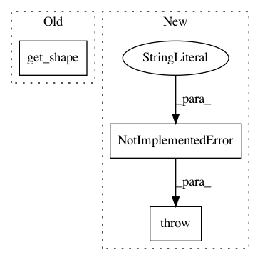

afa8828a97c2d51f994cdfb35af132f658db3e39,snorkel/learning/disc_models/logistic_regression.py,LogisticRegression,_build_model,#LogisticRegression#Any#,16
Before Change
f_w_temp = tf.concat([f_w, tf.ones_like(f_w)], axis=1)
print(f_w_temp.get_shape())
b_temp = tf.stack([tf.ones_like(self.b), self.b], axis=0)
print(b_temp.get_shape())
self.logits = tf.matmul(f_w_temp, b_temp)
else:
self.logits = tf.nn.bias_add(tf.matmul(self.X, self.w), self.b)
After Change
if self.deterministic:
// TODO: Implement for categorical as well...
if self.cardinality > 2:
raise NotImplementedError(
"Deterministic mode not implemented for categoricals.")
// Make deterministic
// See: https://www.twosigma.com/insights/a-workaround-for-non-determinism-in-tensorflow
f_w = tf.matmul(self.X, self.w)
In pattern: SUPERPATTERN
Frequency: 3
Non-data size: 3
Instances
Project Name: snorkel-team/snorkel
Commit Name: afa8828a97c2d51f994cdfb35af132f658db3e39
Time: 2017-12-12
Author: ajratner@gmail.com
File Name: snorkel/learning/disc_models/logistic_regression.py
Class Name: LogisticRegression
Method Name: _build_model
Project Name: tensorflow/cleverhans
Commit Name: 9f78f66849c0c432327dae9b3d72955e97907562
Time: 2019-01-18
Author: npapernot@users.noreply.github.com
File Name: cleverhans/attacks/saliency_map_method.py
Class Name: SaliencyMapMethod
Method Name: generate
Project Name: tensorflow/cleverhans
Commit Name: 05425c36bd27b0611f0ea202aaf9d3c3934bda59
Time: 2017-12-23
Author: dongyinpeng@gmail.com
File Name: cleverhans/attacks.py
Class Name: MomentumIterativeMethod
Method Name: generate